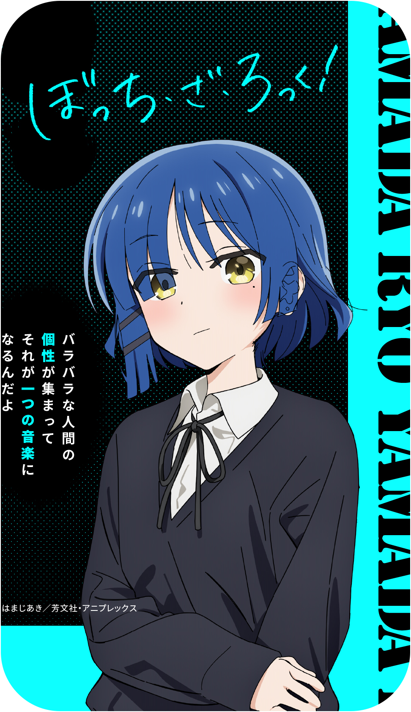

Editor & Motion Designer
O melhor da animação 2d, motion design, produções visuais e diversos serviços na palma da sua mão.

Kannato
Kannato
Bem-vindo! caso não me
conheça, me chamo Rafael
produtor de vídeos e artes digitais
para varejo, empresas entre outros.
Faço animações 2d, manipulações de imagem
Trazendo sempre o máximo de qualidade
para sua produção, pensando semvpre em
alavancar vendas e engajamento nas
redes sociais.
Kannato